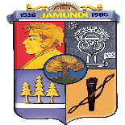
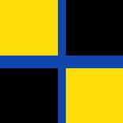

Fecha de fundación: 23 de marzo de 1536 Nombre de los fundadores: Juan de Ampudia y Pedro de Añazco
El sueño Municipio Vallecaucano de Jamundí, históricamente señalado para ser habitado por una abundante mayoría de la etnia africana, fue registrado por los cronistas de la época, que durante la heroica defensa de la hermosa comarca gobernada por el valiente y atlético guerrero Cacique Jamundí (y que para orgullo de sus actuales pobladores, se ha levantado en pleno corazón de nuestro Parque Principal, una formidable escultura en su honor, esculpida por el gran artista nariñense Óscar Esteban Martínez) en un fuerte levantado a orillas de nuestro nativo río, por Juan de Ampudia, para defenderse de la feroz arremetida del intrépido combatiente cacique Petecuy; la primera sangre que se derramó en esta batalla fue la del esclavo negro, traído desde el Perú por Pedro de Añasco, quien posteriormente, cuando atacó a la tribu de los indomables pijaos y mató al hijo de la cacica Gaitana, ésta lo hizo prisionero, le sacó los ojos, lo paseó amarrado por todas las aldeas de su territorio y por último lo ajustició, estacándolo.El Municipio de Jamundí, está conformado por los ecosistemas de selva andina, sub andina y selva seca. Existen tres sistemas hidrográficos de importancia como son el río Jamundí, Claro y Timba los dos primeros nacen en el Parque Nacional Natural Farallones de Cali, y generan una red de tributarios importantes por su cobertura y significancia ambiental, este sistema hidrográfico tiene un total de 63.249 hectáreas, de las cuales un 32% corresponden a una zona plana, un 47% pertenecen a la cordillera y un 21% corresponden al Parque Nacional Natural Farallones.La cantidad de los caudales del río Claro y Jamundí ha permitido fomentar la recreación dominical para las poblaciones circunvecinas, generando una actividad económica importante Localmente.
Su importancia radica en que es la fuente principal para el abastecimiento de aguas para el consumo humano de aproximadamente 100.000 habitantes, desarrollo agropecuario de 18.000 hectáreas en cultivo de zona plana, el desarrollo industrial y agroindustrial de las empresas ubicadas en el área de influencia del Municipio.
|  |
|---|
A través del Decreto 027, 30 de agosto de 1985 la Alcaldía Municipal determinó la creación oficial del Escudo, la Bandera y el Himno de Jamundí
Escudo de Armas
El diseño fue una obra de Raúl Silva Holguín quien explicaba así la composición.
Parte principal Superior: "Lleva un listen de fondo azul con letras doradas donde se lee Jamundi Nombre actual de la ciudad".
Parte Superior Izquierda: "Sobre un fondo glues (Rojo Intenso) el rostro idealizado del Cacique Xamundí".
Parte Superior derecha: "Sobre un fondo gris-pizarra, los dibujos rupestres que se encuentran en la región de Aguasucia que simbolizan la adoración al sol".
Parte Inferior Izquierda: "Sobre un fondo púrpura, tres Cedros de oro los cuales dan el nombre primitivo de la población. Allí mismo se encuentra una paralela horizontal de plata que representa al Río Claro, el cual atraviesa de occidente a oriente el territorio del municipio".
Parte Inferior derecha: "Sobre un fondo oro, las armas defensivas de las tribus contra los españoles al mando de Juan de Ampudia, en el año de 1536".
Parte Central Circular: "Sobre un fondo azul, la Ceiba de la Libertad, sembrada en el parque principales el año de 1854 por el orden del congreso.
|  |
|---|
Fue creada por el maestro Vicente Vega. Sus colores, según la explicación de su creador, simbolizan: el amarillo: la riqueza del territorio, el negro: la riqueza minera y el azul: la riqueza hídrica. Consta de cuatro rectángulos. Los dos rectángulos que ocupan la esquina superior izquierda y la esquina inferior derecha son de color amarillo, mientras los dos rectángulos que ocupan la esquina superior derecha y la esquina inferior izquierda son de color negro. Sus dimensiones son de un metro setenta y dos centímetros (1.72 mts) de largo por noventa centímetros (90 cm) de ancho. Los rectángulos se encuentran separados por unas franjas de color azul (una vertical y otra horizontal) que se cruzan en el centro.
Autor: José Torres Villa